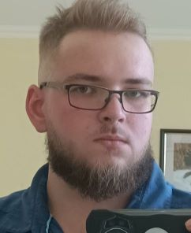
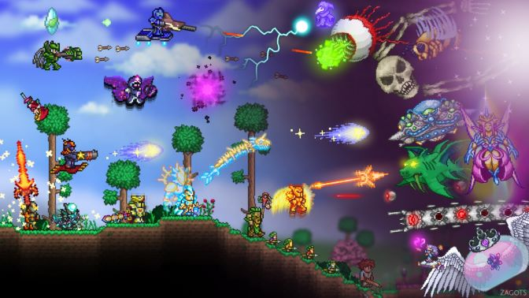
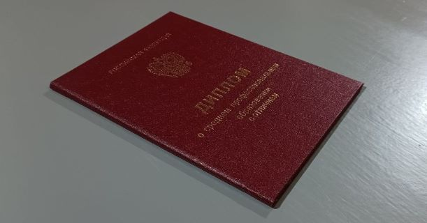
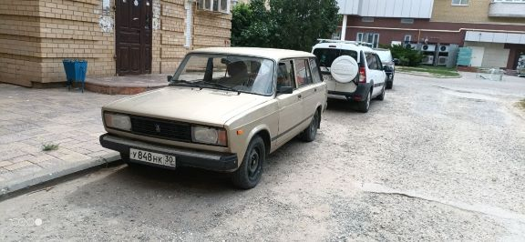
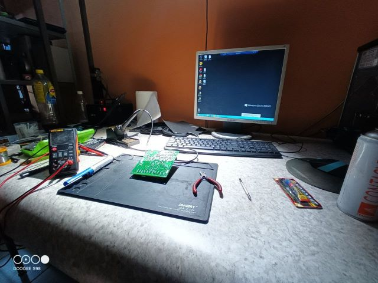
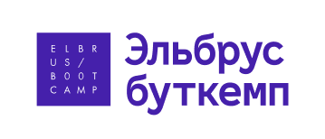

Всем привет! Меня зовут Макс Анохин, и я являюсь создателем
данного проекта.

Мысль о разработке этого проекта возникла спонтанно, во время
старта обучения в школе Эльбрус Буткемп. До этого я всегда
мечтал работать в геймдеве или разработке бионических имплантов,
управляемых микроконтроллерами. Но пока не срослось.
Огромное количество времени в детсвте я провел в играх, на
различных форумах и тематических сайтах.
В школе мой одноклассник рассказал об одной игре - называется
Terraria. Он все очень красочно описал, что там можно строить,
там огромный мир который можно исследовать, а миров может быть
десятки и сотни, и каждый генерируется по-новой, и боссы там
есть, и оружие, и броня и аксессуары...

В общем, после этого я решил ее скачать. Денег нет, между
сосиской в тесте и незнакомой игрой я выбрал сосиску в тесте) И
первый сайт который любезно предложил мне скачать ее бесплатно и
без СМС - TerrariaGO.ru.
Так началось мое знакомство с этой большой и дружной семьей,
память о которой я пронесу еще довольно долго.
Я рос, взрослел, сайт тоже рос и взрослел, но, видимо, у сайтов
года идут не так как у людей, и к 2018 году он загнулся от
недуга OkeAni.
Тем временем я закончил школу, поступил на бюджет в Астраханский
Колледж Вычислительной Техники. В 2021 году закончил с отличием,
и устроился работать в крупный астраханский сервисный центр на
должность техника-электроника.

На работе занимался ремонтом ноутбуков, потом
переквалифицировался в мастера по ремонту и обслуживанию систем
вентилляции и кондиционирования, чуть позже приступил к ремонту
промышленного оборудования пищеблоков. От сервиса работал в
УМВД, УФСБ, ФСИН, Росгвардии, побывал практически во всех
детских садах, больницах и санаториях, бесчисленных количествах
прочих объектов и частных лиц. Тогда приобрел свой первый
автомобиль - ВАЗ 2104, на коем я до сих пор катаюсь и ковыряю.
На нем я исколесил всю Астраханскую область, практически от края
до края, повидал много нового и интересного, сталкивался с
некоторыми трудностями и доблестно их преодолевал.

Но потом, сказать честно, я устал. Много обязанностей, много
ответственностей, ребята, с которыми я работал, стали находить
лучшие условия и покидать рабочее место. Стало грустно, стало
скучно. Остался один-на-один с техникой, которая постоянно
ломается. Каждый день стал днем сурка с перерывами на поездки,
обед и сон.

Твердо решил, что так продолжаться больше не может. Нужно искать
что-то другое, я человек в конце-концов, я хочу исполнять свои
мечты! А мечта у меня была работать в IT. Поехали.
Нужно с чего-то начать. Но с чего? Правильно, с учебы.
Онлайн-курсы мимо, этому мы не доверяем, там не научат. Нужно
что-то очное. Вот оно! Академия, мать ее, ТОП! 2.5 года на
обучения за 170к и вы первоклассный программист C++ в консоли.
Круто. К сожалению, о таких перспективах я узнал на третьем
занятии, когда изучали что же такое перфокарты. Договор
расторгнут.
Ну не может же так кончиться мой опыт программиста. Крайне злой
и разочарованный я стал искать другое место, начал смотреть
видео в Ютубе на тему IT, и чисто случайно попал на рекламу
Эльбруса у господина
Noukash. Так я начал свое знакомство с буткемпом.

... В коем обучаюсь по сей день. Клянусь приложить максимум
усилий чтобы довести этот проект до релиза. Работы предстоит
очень много, так что следите за развитием. До новых встреч!